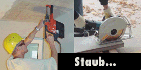
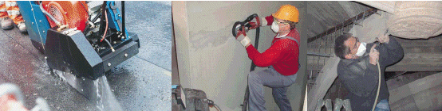
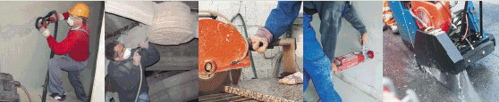

In der Bauwirtschaft tritt bei sehr vielen Tätigkeiten Staub auf. In der Regel handelt es sich dabei um mineralischen Mischstaub, z.B. aus Sand, Kalk, Gips, Zement oder Beton. Dieser Mischstaub enthält erfahrungsgemäß auch Quarzfeinstaub. Der Quarzanteil im Feinstaub kann sehr unterschiedlich sein und ist u.a. vom zu bearbeitenden Material abhängig.
Warum ist Staub gefährlich?
Jeder Staub kann bei hohen Belastungen zu Erkrankungen der Atemwege führen. Darüber hinaus kann Quarzstaub zur Silikose führen und damit auch Lungenkrebs verursachen.
Die Wirkungsweise der Stäube ist abhängig
Besonders gefährlich ist die Aufnahme hoher Staubmengen über einen kurzen Zeitraum.

Staub ist auch am Bau durch richtiges Verhalten und Beachtung weniger Regeln weitgehend vermeidbar:
Lassen sich aus arbeitstechnischen Gründen die oben aufgeführten Maßnahmen nicht realisieren, sind persönliche Schutzausrüstungen zu benutzen:
Bei staubintensiven Tätigkeiten Schutzkleidung tragen und getrennt von der Arbeitskleidung aufbewahren.
Atemschutz verwenden (Partikelfilter P 2 oder partikelfiltrierende Halbmasken) und arbeitsmedizinische Vorsorgeuntersuchungen veranlassen.
Bei Fragen zum Thema Staub hilft Ihnen gerne Ihre
Präventions-Hotline der BG BAU:
0800 80 20 100 (gebührenfrei)
Internet:
www.bgbau.de
Weitere Informationen

Eine Liste geeigneter Maschinen und Geräte finden Sie im Internet unter:
Hier erhalten Sie auch weitere Informationen zum Thema Staub.
Herausgeber und Copyright:
Berufsgenossenschaft
der Bauwirtschaft
Hildegardstraße 29/30
10715 Berlin
E-Mail: info@bgbau.de
Ausgabe 2007
Abruf-Nr: 680